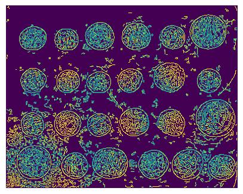
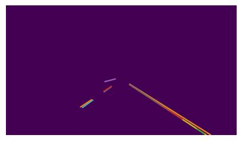
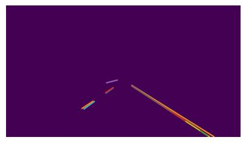

Edge Detection
This is my writeup for the Edge Detection assignment! You can reproduce this by running the following commands in the root directory (repository here).
python3.10 -m pip install scikit-image numpy matplotlib cd misc/ # download needed images wget https://i.imgur.com/0QwYCrn.jpg road.jpg wget https://i.imgur.com/3wpkukL.png noisy_einstein.png wget https://i.imgur.com/3E0XsKs.png iguana.png wget https://i.imgur.com/LDAvVPt.jpg stripes.jpg # run generator script for this assignment python3.10 edges.py
This will generate the images referenced by this document.
Simple Edge Detection
Exercise 1
The image is dark, and it's hard to tell where the edges are that we found. How can we improve on this? Can we do this in a single filter?
We can double the brightness of the resulting edges by changing the ones in our filter to twos:
fil = np.array([[2, 0, -2]])
display(cv2.filter2D(image, -1, fil))
The algorithm finds lots of edges, but we don't care about all of them. Could we keep only the brightest edges somehow?
A straightforward way to do this would to just be to set a threshold for how bright an edge has to be for us to retain it, and then black out all pixels in the output image that are dimmer than that threshold:
result = cv2.filter2D(image, -1, fil) threshold = 60 def f(x): if x < threshold: return 0 else: return x result = np.vectorize(f)(result) display(result)
Our operations are per-pixel, so we can get some bonus performance with np.vectorize.

We used a horizontal derivative filter. Create and run a vertical derivative filter. Should it look similar? Does it? Find an image where the horizontal and vertical derivative filters produce very different output.
We can get a vertical derivative by just transposing our horizontal filter. Theoretically, this vertical filter should perform better on horizontal stripes:
stripes = cv2.imread('./imgs/stripes.jpg') fil = np.array([[2, 0, -2]]) # needs to be a 2d array! display(cv2.filter2D(stripes, -1, np.transpose(fil))) display(cv2.filter2D(stripes, -1, fil))
And it does! The horizontal filters finds nothing (as it should, since there aren't any horizontal changes in this image!).
How does the derivative filter respond to noise? Load and run the filter on the noisyeinstein image. Can you improve on this result?
einstein = cv2.imread('./imgs/noisy_einstein.png') display(cv2.filter2D(einstein, -1, fil*2))
Unsurprisingly, it performs poorly! There's now a lot of random derivatives that don't actually indicate edges, polluting the image.
We can try to do better by removing this noise by blurring the image first:
display(cv2.filter2D(cv2.filter2D(einstein, -1, np.ones((3,3))/9), -1, fil*2))
Advanced Edge Detection
Gaussian Blur
Recall from lecture that the two parameters to Gaussian blur are kernel size and sigma. How do changing these parameters affect the output of the blur filter? You may want to find a different example image to illustrate your point.
Let's vary \(\sigma\) first:
display(cv2.GaussianBlur(einstein, (5,5), 0.1)) display(cv2.GaussianBlur(einstein, (5,5), 0.5)) display(cv2.GaussianBlur(einstein, (5,5), 1)) display(cv2.GaussianBlur(einstein, (5,5), 2)) display(cv2.GaussianBlur(einstein, (5,5), 10))

\(\sigma\) seems to vary the degree to which the image is blurred!
Now we can vary the kernel size:
display(cv2.GaussianBlur(einstein, (5,5), 0.1)) display(cv2.GaussianBlur(einstein, (15,15), 0.1)) display(cv2.GaussianBlur(einstein, (25,25), 0.1)) display(cv2.GaussianBlur(einstein, (45,45), 0.1))


It's challenging to pick it out with the naked eye - but we know from our earlier work with filters what a kernel is doing, so we can say that increasing the kernel size simply involves more of the surrounding pixel values in the blurring process.
Canny Edge Detection
Play with the thresholds to get different output. How does changing each threshold affect the edges that the algorithm finds?
Let's first experiment with the low threshold:
display(feature.canny(coins, sigma=1, low_threshold=5, high_threshold=50)) display(feature.canny(coins, sigma=1, low_threshold=25, high_threshold=50)) display(feature.canny(coins, sigma=1, low_threshold=40, high_threshold=50)) display(feature.canny(coins, sigma=1, low_threshold=45, high_threshold=50))

The low threshold primarily exists as a method of preventing broken lines caused by pixels skirting above and below the threshold for being considered an edge (by allowing "weak edge" connected to "strong edge" pixels to count as edges). Thus, as we begin to raise it increasingly high, we see more broken up lines - like the third coin from the top on the right side.
Now let's tweak the high threshold:
display(feature.canny(coins, sigma=1, low_threshold=25, high_threshold=30)) display(feature.canny(coins, sigma=1, low_threshold=25, high_threshold=50)) display(feature.canny(coins, sigma=1, low_threshold=25, high_threshold=80)) display(feature.canny(coins, sigma=1, low_threshold=25, high_threshold=90))
The originally low value for the high threshold means that a bunch of random pixels were counted as strong edges, and combined with some random weak edge neighbors, you get extra noise edges. This effect immediately goes away when we raise the high threshold a bit: even though the weak edge pixels remained, they don't amount to anything unless they border a strong edge pixel, and thus the extra lines go away. Once we raise it even higher, genuine edges that were on the lower end begin to be treated as if they weren't edges.
Imagine that you have an image with lots of false positives: that is, it finds lots of edges that aren't actually edges. How would you adjust thresholds to improve the result?
As we just discussed, we'd want to raise the high threshold (and I suppose the low threshold a bit). The few false positive strong edges allow the nearby false positive weak edges to be considered edges as well, thus forming more noticeable false positive edges .
Imagine that you have an image where the edges don't connect well: that is, it finds some edges, but the edges tend to be broken lines instead of solid lines. How would you adjust thresholds to improve the result?
The "broken lines" effect is likely a result of thresholds being too high - especially the low theeshold. Any edges with small variations that go above and below the low threshold will only have parts considered as edges: thus making them look like broken ones. Lowering the low thresholds allows the weaker pixels adjacent to the strong parts of the edge to be considered as part of the edge (and so the edge will be fully visible).
Remember from exercise 1 that the two parameters to the Gaussian blur are kernel size and sigma, and that both affect the output of the blur filter. Notice that skimage's canny implementation only takes sigma as a parameter. Without modifying the source code, how might you incorporate a different kernel size into the implementation?
We can pre-blur the image with our own custom kernel size and have the Canny edge detector not blur it at all by setting \(\sigma\) to 0.
prepross = cv2.GaussianBlur(coins, (5,5), 0.1)
display(feature.canny(coins, sigma=0, low_threshold=25, high_threshold=50))

Try to improve the edges you find by tweaking the parameters.
I chose to skip this question.
Try running the edge detector on some different images. skimage.data has a good set to start with. You can also look at Berkeley's collection of benchmark images. Take notes on which images Canny performs well on, and which it does not.
I chose to skip this question, too.
Hough Transform
We've found some lines. Lots of them, in fact. Using only the techniques we've learned so far, how can we clean up this image to only show the lines that correspond to lanes? Optional: implement some of them and show the improvement in the produced image.
First off, we can pass the Hough transform the output of a better tuned Canny edge detection, which will let us have more control over what lines the Hough transform can find. By manipulating the thresholds for the Canny filter, we can only keep the strongest of edges, already filtering out of the noise in the lines produced.
image = cv2.imread('./imgs/road.jpg', flags=cv2.IMREAD_GRAYSCALE) edge_image = feature.canny(image, sigma=1, low_threshold=20, high_threshold=80) lines = probabilistic_hough_line(edge_image, threshold=1, line_length=20, line_gap=5) show_lines(image, lines) edge_image = feature.canny(image, sigma=1, low_threshold=100, high_threshold=120) lines = probabilistic_hough_line(edge_image, threshold=1, line_length=20, line_gap=5) show_lines(edge_image, lines)
This only does a smidge better, and it's a barely noticeable improvement.
Alternatively, we can try to create a mask of the white spots of the image, since we know that the lane dividers are nearly pure white. We'll need to pick (and tune) a brightness threshold that pulls out primarily the lane dividers.
image = cv2.imread('./imgs/road.jpg', flags=cv2.IMREAD_GRAYSCALE) for row in range(image.shape[0]): for col in range(image.shape[1]): if image[row, col] > 200: image[row,col] = 255 else: image[row,col] = 0 edge_image = feature.canny(image, sigma=1, low_threshold=100, high_threshold=120) lines = probabilistic_hough_line(edge_image, threshold=1, line_length=5, line_gap=5) display(image) show_lines(image, lines)
We can also use additional information that we have about the image; namely, we know that our images are always coming from a camera mounted on the front of the car. How could we use this information to improve on our lane-finding algorithm? Optional: implement your suggestion and show the improvement in the produced image.
Since the camera is mounted on the front of the car, we know a few things:
- The lane dividers will be lines that roughly share a vanishing point in the center of the image (approximately the horizon)
- Lane dividers on the left side of the images will have positive slope, and those on the right will have negative slope
- The magnitude of slope for a lane divider will be higher as it gets closer to the center of the image
We can use the last two methods to get a pretty good heuristic for filtering our lines (combined with the earlier strategy of using a Canny filter first). After some tuning of thresholds, we get:
edge_image = feature.canny(image, sigma=1, low_threshold=100, high_threshold=120) lines = probabilistic_hough_line(edge_image, threshold=50, line_length=25, line_gap=30) final_lines = [] for line in lines: try: slope = (line[1][0]-line[0][0])/(line[1][1]-line[0][1]) if abs(slope) > 4: continue if line[0][0] < image.shape[1]/2 and slope < 0: final_lines.append(line) elif line[0][0] > image.shape[1]/2 and slope > 0: final_lines.append(line) except: pass show_lines(edge_image, lines) show_lines(edge_image, final_lines)
This code is somewhat confusing since all of the logic is backwards: the image coordinate system places the origin in the top left of the image instead of the bottom left. The manual slope check is a tuned constant trying to cut off lines with too shallow a slope to be immediate lanes - although it's also backwards.
 

A video is just a series of images (usually 30 images per second). Imagine that your lane-finding algorithm is being fed a video from a front-mounted camera. Describe how you would use your lane-finding algorithm to keep the car driving straight and in its lane.
The goal is to essentially keep it so the lanes closest to you vanish at the origin and never intersect if continued outwards into the road. If they do intersect at some point on the road, that means the car is unaligned and about to commit some serious road safety violations. We can use a similar slope-based method to find the lanes, and then throw an error if we don't find 2 (because then some of the basic slope tests have failed and thus something is wrong).